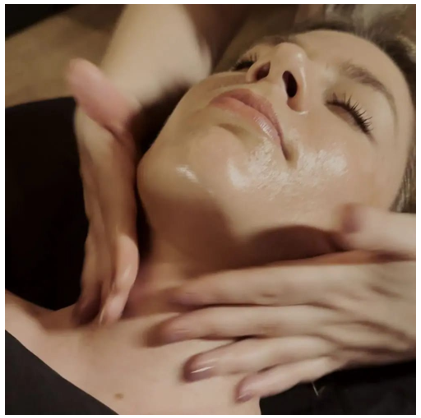
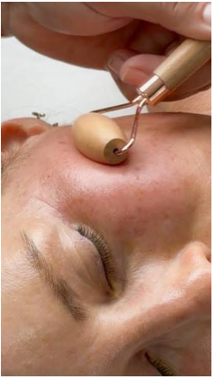

Valoración inicial
Evaluar movilidad voluntaria y asimetría facial; detectar secuelas como hipertonía o sincinesias antes de considerar una intervención manual.
Información orientativa sobre anatomía facial, abordaje fisioterapéutico y el uso complementario de maniobras manuales Kobido.
La parálisis facial periférica (PFP) afecta el nervio facial, séptimo par craneal. Puede causar debilidad o pérdida del movimiento voluntario de un lado de la cara y afectar el cierre ocular, la competencia labial y la expresión gestual. La intervención manual requiere evaluación individual y conocimiento de la anatomía.
| Músculo facial | Función principal | Posible alteración en la PFP |
|---|---|---|
| Frontal | Eleva las cejas y forma pliegues en la frente. | Descenso de la ceja y disminución o pérdida de arrugas frontales. |
| Orbicular de los ojos | Cierra los párpados y contribuye a proteger la córnea. | Dificultad o imposibilidad para cerrar el ojo. |
| Cigomáticos (mayor y menor) | Elevan la comisura labial al sonreír. | Asimetría al sonreír y caída de la comisura labial. |
| Buccinador | Comprime la mejilla y ayuda a controlar el bolo alimenticio. | Debilidad en la mejilla y posible acumulación de alimentos. |
| Orbicular de la boca | Cierra y protruye los labios; contribuye a la competencia labial. | Incompetencia labial y posibles dificultades en el habla o alimentación. |
La rehabilitación convencional prioriza la evaluación individual, la reeducación neuromuscular y el entrenamiento motor de acuerdo con la fase clínica. Las maniobras Kobido se plantean aquí como estimulación sensorial y movilización suave de tejidos blandos, bajo indicación profesional.
| Maniobra manual | Aplicación en tejidos blandos | Finalidad complementaria |
|---|---|---|
| Deslizamientos | Movimientos suaves siguiendo la dirección de las fibras musculares faciales, con presión cómoda y controlada. | Favorecer la percepción sensorial y la relajación tisular. |
| Fricciones | Presión superficial y controlada sobre grupos musculares específicos, únicamente si el profesional lo considera adecuado. | Movilizar tejidos blandos y aportar estímulos propioceptivos sin provocar dolor. |
| Percusiones rítmicas | Toques ligeros y rítmicos, ajustados a la tolerancia y al tono muscular. | Estimular la sensibilidad cutánea sin generar fatiga ni aumentar el tono muscular. |
La secuencia organiza el proyecto educativo y el registro de cambios. La aplicación clínica debe ser realizada o supervisada por profesionales habilitados.
Evaluar movilidad voluntaria y asimetría facial; detectar secuelas como hipertonía o sincinesias antes de considerar una intervención manual.
Seleccionar maniobras de acuerdo con la anatomía regional, la condición clínica y las necesidades de cada participante.
Aplicar las maniobras de forma controlada y observar la respuesta neuromuscular y la comodidad en cada sesión.
Registrar la evolución y comparar la valoración inicial y final para describir cambios en movilidad, simetría y función.
Antes de cualquier maniobra se requiere valoración profesional y revisión de posibles contraindicaciones. La intervención debe detenerse si causa dolor, irritación o empeoramiento de los síntomas.
La terapia Kobido no regenera el nervio facial, no demuestra eficacia curativa por sí sola y no sustituye el tratamiento médico ni la rehabilitación fisioterapéutica convencional. La selección de maniobras, intensidad y momento clínico corresponde al equipo profesional.
Si la persona no puede cerrar completamente un ojo, debe consultar pronto sobre protección ocular. Si la debilidad facial aparece de forma repentina, se necesita evaluación médica urgente para identificar la causa.
Las imágenes conservan su proporción y se muestran completas dentro de sus marcos.

